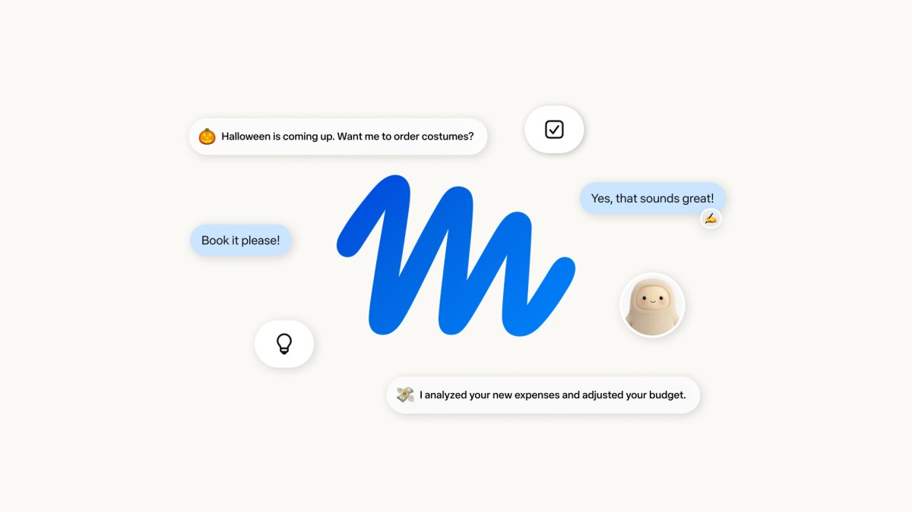
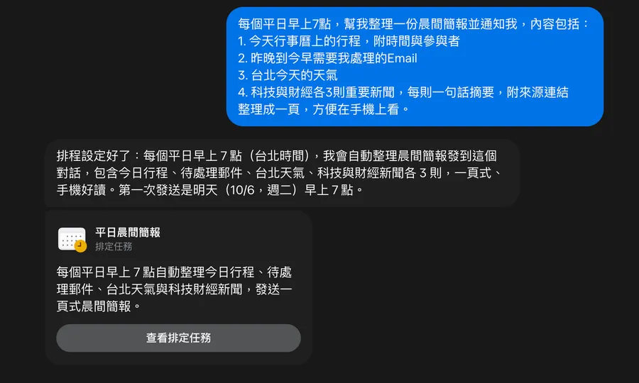

Threads｜Meta Muse 地區限制與非官方註冊繞行法：先辨識可用性、條款與風險

一句話摘要
Muse 值得關注，但「能否打開註冊頁」不等於「你的地區已獲官方支援」；涉及帳號、身分／年齡驗證、信用卡與可跨 App 行動的代理時，應優先等待正式開放或使用官方通知管道。
Threads 貼文內容（僅作來源紀錄）
作者 `gimsuho945` 面向台灣與香港使用者，分享透過第三方雲端瀏覽器或 VPN 連到美國節點來開啟 `muse.ai/join` 的方式，並提到電子郵件驗證、年齡確認、信用卡流程與 48 小時內推薦碼兌換。這些是使用者社群分享的非官方經驗，不是 Meta 或 Muse 公告的支援流程。
本文不重述足以協助繞過地區、驗證或服務資格限制的逐步操作，也不推廣貼文內的推薦碼。
官方可確認的範圍
Meta 在 2026-09-08 的 Muse 公告表示，Muse 正在美國的 iOS、Android 與 `muse.ai` 推出。公告同時指出，Muse 是可在專屬 Secure VM 與瀏覽器中代表使用者執行任務的個人 AI Agent；它可連接日常服務、處理長時間工作，且在寄信、付款等敏感操作前請求使用者批准。
官方公告沒有將台灣或香港列為本次 rollout 範圍，也沒有把 VPN、雲端瀏覽器來源地、切換 App Store 帳號或替代帳號描述為支援的加入方式。
為什麼這類繞行方式的風險較高
- 條款與帳號風險：服務可能依所在地、年齡、付款資格或帳號條件限制使用；繞行後可能無法使用、遭限制、失去支援或影響帳號。
- 資料與授權風險：Muse 可處理跨服務任務。若一開始就提供 Email、行事曆、社群、密碼管理器或付款資料，影響面遠大於一般聊天 App。
- 雲端瀏覽器風險：在非自己管理的遠端瀏覽器輸入 Email、驗證碼、信用卡或登入憑證，可能讓 session、cookie、畫面或輸入資料暴露於額外信任邊界。
- 付款與身分驗證風險：不要為了進入未開放服務而提供不符合資格的付款或身分資訊；這也可能造成退款、爭議處理與帳號復原困難。
- 推薦獎勵不保證：社群宣稱的 token 數、兌換期限、設定位置與資格常會變動，不能作為加入服務的主要理由。
較穩妥的追蹤策略
- 以 `muse.ai` 與 Meta Newsroom 的正式公告確認台灣／香港開放情形。
- 若之後獲得官方邀請或正式可用，先用低風險、非敏感的任務試用，不急著連接 Email、付款、行事曆或社群帳號。
- 逐項檢查可授予哪些權限、是否能撤銷、是否提供完整 audit trail，以及敏感操作是否必須人工確認。
- 在正式支援前，若只是要體驗「語音靈感轉任務清單」，可使用已在所在地可用的語音備忘錄加上 AI 整理流程，不需把帳號安全押在非官方繞行方法上。
2026-10-06 補充：數位時代實測教學的可採用原則
《數位時代》李先泰的實測文章將 Muse 定位為可交辦、可在背景完成工作的個人 AI 助理，並整理 Soul、連接器、資料控制、成品庫與排程等使用畫面；這些描述可與 Meta 2026-09-08 公告中「專屬 Secure VM／瀏覽器、長時程任務、敏感動作要求核准」的產品方向相互對照。
文章中最值得保留的，並不是跨區取得服務的做法，而是一般 Agent 都可採用的操作紀律：
- 先設定安全界限：付款、訂位、送出表單、修改帳號或對外傳訊前，必須呈現具體內容並等待明確核准。
- 先最小化權限：初次連接信箱、行事曆、社群或其他資料來源時，優先選擇可用的唯讀範圍；完成低風險測試後才逐項擴權，並確認可撤銷。
- 將任務寫成「任務＋資料範圍＋完成標準＋交付形式」：例如限定只讀哪些官方來源、要求標示未說明項目、規定輸出格式與可驗收檔案。
- 抽查結果而非只看完成通知：開啟產出檔、點閱來源是否真的支持結論，並在同一任務脈絡要求修訂與列出差異。
- 先以不敏感資料試用：不要在尚未確認資格、權限與記錄機制之前，就交出付款、身分、私人通訊或完整社群資料。
文章也主張台灣用戶可藉由 VPN 建立帳號。此說法屬出版方的實測敘述，並不構成 Meta 對台灣的官方可用性或合規註冊途徑確認；本知識庫不保留其可操作步驟。服務地區、免費額度、連接器範圍與付款功能都可能變動，應回到 Muse 與 Meta 的正式頁面確認。

2026-10-12 補充：以「避開風控」包裝的跨區與額度攻略
Threads 帳號 `dwankevin` 的貼文再次將 Meta Muse 描述為能持續在雲端背景工作的個人 agent，並主張可透過替代網路／瀏覽環境、全新帳號與付款驗證來繞過非支援地區的限制；文中也宣稱有大量 token 與推薦獎勵。這些內容和本條目先前紀錄的跨區、資格驗證與促銷敘事屬同一類風險，故合併保存而不重複建立文章。
Meta 官方公告可確認 Muse 使用專屬 Secure VM、能在使用者關閉 app 後繼續處理任務，並在寄信、購買等敏感動作前要求核准；官方公告的 rollout 範圍則是美國。官方公開資料未把任何規避地區、帳號足跡、年齡／付款驗證的做法列為正式加入方式，也未在本次查核中確認該貼文所稱的 token、推薦或預授權條件。
這類「成功率」「永久額度」「短期兌換」訊息即使有個別使用者回報，也不該凌駕服務條款與帳戶安全：不要為了存取資格提交不正確的地區／身分／付款資料，不要在第三方遠端環境輸入憑證或一次性驗證碼，也不要把邀請獎勵視為長期承諾。若日後有正式所在地支援，仍應先從低風險任務、最小權限與逐次人工核准開始。
補充來源：https://www.threads.com/share/BAUhV4s3oh/
2026-10-17 補充：以第三方遠端環境與驗證替代方案取得 Muse 的貼文
Threads 帳號 `grace_myy` 的貼文及同串相關內容，主張可藉由第三方遠端瀏覽環境、替代帳號或付款／年齡驗證途徑取得 Meta Muse 的存取資格，並夾帶推薦獎勵與付款資訊相關說法。這與先前條目所記錄的「以非官方方式繞過地區、帳號資格或驗證邊界」屬同一風險類型，因此合併為補充來源，而不另建重複文章。
本知識庫不保存或轉述其中的逐步做法、中介服務名稱、推薦碼、付款卡資料、帳號資料或任何驗證指引。這些屬社群貼文的未驗證說法，不能取代 Meta／Muse 的正式加入流程；尤其不應在陌生的遠端環境輸入帳密、一次性驗證碼、付款資料或持久登入 session。
本次擷取時，`muse.ai` 與 Meta 的 Muse 安全說明頁均可讀取；兩者並未將該貼文描述的資格繞行、替代驗證或獎勵條件列為官方支援的 onboarding 路徑。若所在地尚未開放，較穩妥的做法仍是追蹤官方公告、等待正式資格，並在日後取得正規存取時先以最小權限和低敏感任務試用。
補充來源：https://www.threads.com/share/BAIuCRBxti/
2026-10-22 補充：Oracle「免費主機」上的 Hermes 與 Muse
Facebook Reel「一人公司研究所」以「**愛瑪仕上雲實測／Oracle 免費主機 × 24 小時 AI 夥伴**」為縮圖，描述要用羅達老師的步驟，讓 Hermes 上雲並與 Muse 成為 24 小時不關機的夥伴。影片受 Facebook 登入牆限制，未取得其實際指令、主機規格、網路設定、成本或教學連結，因此本文不重建、也不背書該流程。
[Oracle 官方 Free Tier](https://www.oracle.com/cloud/free/)可確認兩個不同概念：新帳號有 **US$300、30 天**試用 credit；另有 **Always Free** 服務。30 天後若不升級，帳號可繼續使用 Always Free 服務；若改 Pay As You Go，超出 Always Free 月額的資源會收費。這不代表任一區域、任一機型、IP、網路流量或資源保留都保證免費或可取得；應以建立當下的 OCI console 顯示與價格／配額為準。
把自有 Hermes 部署到自己管理的 VM，可以是「長時間、自主可控」的技術選項；但它與 Meta Muse 的官方地區資格是兩件事。**不得**把 OCI 公開 IP、VPN、雲端瀏覽器或遠端桌面用作繞過 Muse 的地區、帳號、付款或身分資格限制。
若未來評估自有 VM，最低安全基線應是：SSH key（不開密碼登入）、限制入站 port、OCI security list 與主機防火牆雙層控管、定期更新、備份與還原演練、日誌、資源／費用告警、祕密不寫入 repo／對話，並將公開服務入口與 agent 控制面分離。含聊天、課程或個資的資料不可因「免費主機」而直接公開暴露。
補充來源：https://www.facebook.com/reel/1431941529154237
2026-10-22 補充：以帳號「放水」與轉售包裝的 OCI 貼文
X 帳號 `@_ninetyhe` 的貼文宣稱 Oracle Cloud 近期較容易申請，並以 Always Free ARM 資源為賣點；同時鼓吹用非真實或替代資料／網路環境處理資格驗證，並把帳號或月付服務轉售。這已不是正常的 Free Tier 評估或自有 VM 部署，而是涉及資格規避與帳戶濫用的主張。
本知識庫不保存、轉述或連結其操作做法。Oracle 官方 [Free Tier 頁面](https://www.oracle.com/cloud/free/)只可支持「新帳號有 30 天 US$300 trial credit 與 Always Free services」的公開說明；它不支持「現在很好過」「某規格必定可開」「免費資源永久保留」或任何驗證規避的結論。區域容量、機型、資格、帳戶狀態與費用均應以當下官方 console 和條款為準。
不要以不實資料、規避資格驗證、多開帳戶或出售帳戶／存取權來取得雲端資源。這可能違反服務條款、帶來帳號與付款風險，也可能構成不當或詐欺性行為。若目標是長期運作自有 Hermes，應使用真實帳戶、可追溯的帳務與最小權限的正式部署，不以「薅資源」作為架構依據。
補充來源：https://x.com/_ninetyhe/status/2113119446994997722
原始連結
- Threads 分享：https://www.threads.com/share/_3LyTAj3t/
- Threads 原貼文：https://www.threads.com/@gimsuho945/post/DeB8KbdFM9z
- Muse：https://muse.ai/
- Meta 官方公告：https://about.fb.com/news/2026/09/introducing-muse-personal-ai-agent/
- 數位時代實測教學：https://www.bnext.com.tw/article/92505/muse-tutorial-hands-on
- 2026-10-17 Threads 補充：https://www.threads.com/@grace_myy/post/DeliB6Om6dZ